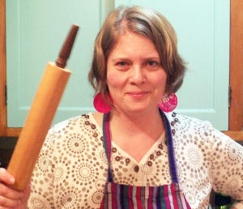

History
Sometimes great things come from humble beginnings. For Merilee Wilbur, that beginning came in the form of a request from her 8-year-old son, Jake, who needed a snack to take to his chess club meeting. Merilee flipped through her recipe box and pulled out her grandmother's recipe for Chess Pie. Perfect!
The pie was such a hit with the kids - and their coach - that Merilee started getting requests to bake pies for other occasions: school events, birthdays, even a Pi Day celebration at the local library. Pie in the Sky Bakery was born.
She got so many orders that her fledgling business soon outgrew her family's kitchen. In 2006, she rented her current location at 34 Main Street, where she and her team of bakers have served up fresh, delicious pies ever since.